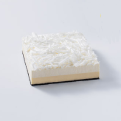

芝士蛋糕
芝士蛋糕是指用芝士为主要乳料做的蛋糕。
芝士又名奶酪、干酪，指动物乳经乳酸菌发酵或加酶后凝固，
并除去乳清制成的浓缩乳制品。芝士本身主要由蛋白质、脂类等营养成分组成，同牛奶一样。
芝士蛋糕含有丰富的钙、锌等矿物质及维生素A与B2外，
还因其是经过发酵作用制成而使这些养份更易被人体吸收。
芝士蛋糕，又名起司蛋糕、干酪蛋糕，是西方甜点的一种，
英文是cheese cake，它有着柔软的上层，混合了特殊的芝士，
如乳清干酪，或是奶油奶酪，再加上糖和其他的配料，如鸡蛋、奶油、椰蓉和水果等。
芝士蛋糕通常都以饼干做为底层，亦有不使用底层的。有固定的几种口味，
如原味芝士、香草起士，巧克力芝士等，表层加上的装饰常常是草莓或蓝莓，
也有不装饰或是只是在顶层简单抹上一层薄蜂蜜的种类，
此类蛋糕在结构上较一般蛋糕扎实，但质地却较一般蛋糕来得绵软，
口感上较一般蛋糕来得湿润，若以具体事物来描述，
芝士蛋糕是口感上类似于提拉米苏或是慕斯之类的糕点，但本身又不如两者来得绵软。